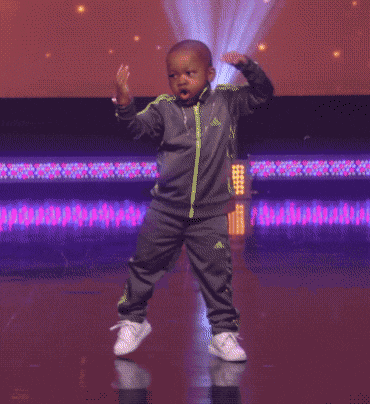

Home
Lit Vidz
Meet the team
Here is some of the most lit wids and pics that we have found on the internet.
Wow what 360 noscope
Look how many guys that guy nutmeged
Look at this lit dance by this lit kid
